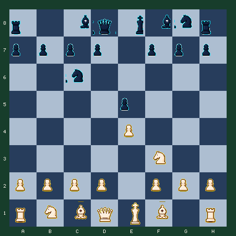

7月26日 · 早报 · 开局
意大利开局：五步准备一次 d4
不背一串着法，而是连续完成出象、稳中心、准备兵突破和发展后翼马。
难度 2/5 · 预计 7 分钟 · 5 次关键选择 · 主题：意大利开局中心计划
故事引入
很多人知道意大利开局要把象放到 c4，却不知道下一步做什么。真正的计划不是把棋子摆到熟悉位置，而是为中心的 d4 突破逐项准备。
你将连续做五次选择。每一步都很安静，但它们共同回答一个问题：怎样让 d4 推进时不丢兵，还能顺便完成发展。
最古老的开放性开局之一
意大利开局在十六世纪棋谱中就已出现。它长期流行，不是因为只有一条强制变化，而是因为它把中心、发展和王的安全放进了一个容易理解的计划。
今日局面
白方走五步，完成意大利式发展并推进 d4。

行棋方：白方 · FEN：r1bqkbnr/pppp1ppp/2n5/4p3/4P3/5N2/PPPP1PPP/RNBQKB1R w KQkq - 2 3
今日问题
五步搭好中心突破的脚手架
先发展，再支撑，最后推进 d4。对手会正常发展，你要保持计划连贯。
答案与逐步讲解
第 1 步：f1c4 · 对手回应 g8f6
第一步正确：Bc4 把象放到活跃对角线，同时关注 f7。
第 2 步：d2d3 · 对手回应 f8c5
第二步正确：d3 先稳住 e4，为 c3 与 d4 留出清晰次序。
第 3 步：c2c3 · 对手回应 d7d6
第三步正确：c3 控制 d4，并准备让 d 兵前进后仍有兵链支持。
第 4 步：b1d2 · 对手回应 a7a6
第四步正确：Nbd2 完成后翼马发展，同时不给 d 兵造成阻挡。
第 5 步：d3d4
第五步正确：d4 终于提出中心问题。前四步让这次推进不再是孤立冲动，而是完整计划的兑现。
完成总结
五步计划完成。你没有机械背谱，而是依次完成活跃出象、稳住 e4、用 c3 支撑、发展后翼马，最后用 d4 争夺中心。
常见错误
如果走 d2d4
立即 d4 不是不可下，但在本课局面中白方还没完成 c3 支撑与子力发展，交换后容易过早简化。
如果走 b1c3
Nc3 是自然棋，却会挡住 c 兵，改变 c3-d4 的意大利式计划。本题要体验 Nbd2 的分工。
复盘：开局着法要组成计划
- Bc4 发展并对准 f7，建立意大利开局的基本方向。
- d3 与 c3 分别稳住 e4、支持 d4。
- Nbd2 完成发展，同时保留 c 兵路线。
- d4 是前面四步的兑现，而不是突然想到的兵推进。
带走一句：
学习开局时不要只记顺序，要能说出每一步为最终中心突破增加了什么条件。
常见疑问
Q：为什么要先走 d3？
A：d3 先保护 e4，确保白方准备 c3 和 d4 时中心兵不会松动。
Q：马为什么不去 c3？
A：Nbd2 既发展马，又保留 c 兵走到 c3 的通道。Nc3 并不坏，但对应另一套中心结构。
Q：为什么第五步才走 d4？
A：前四步是在降低 d4 的成本：更多子力参与、中心有支撑、交换后也能自然回吃。
想亲自走一遍这盘棋？
点击下方链接进入互动版，可以点击或拖动走棋，每一步都有即时红绿反馈和教练讲解。
棋刻 Chess Moment · 每天三分钟，想明白一步棋